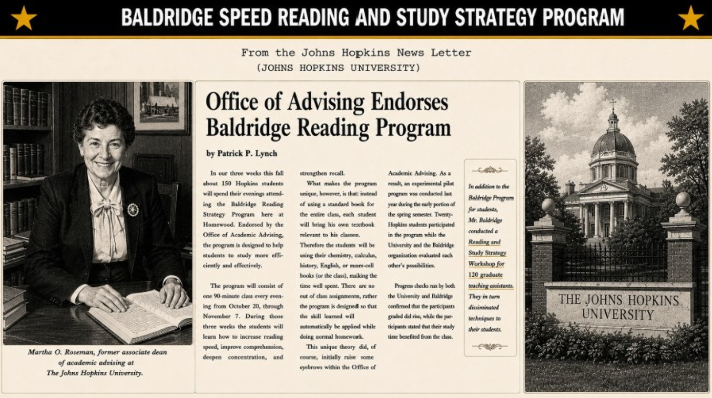

Dean's Reference Letters
Recommendation letters and endorsements from academic deans and directors at leading colleges, universities, and private schools — and from The White House.
Colleges & Universities


Johns Hopkins University Newsletter

From the Johns Hopkins University Newsletter. "Office of Advising Endorses Baldridge Reading Program" by Patrick P. Lynch. Martha O. Roseman, former Associate Dean of Academic Advising at The Johns Hopkins University.
Lower, Middle, and High Schools — Grades 3–8 and 9–12


The White House
"We greatly appreciate the program conducted by your staff. It was professionally conducted, your instructors were outstanding and the participants' remarks have been very complimentary in every way."
— Landon Kite, Director of Correspondence, The White House